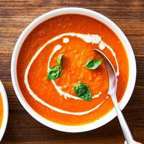

Tomato Soup

Ingredients
- 28 ounces (one large can) whole peeled or crushed tomatoes (San Marzano preferred)
- 1/2 large onion, roughly chopped or quartered
- 4 tablespoons unsalted butter
- Water or broth (chicken or vegetable) to thin as desired
- Salt to taste
- Optional: Fresh basil leaves for garnish
Steps
- Melt the butter in a large pot or saucepan over medium heat.
- Add the onion, tomatoes (with their juices), and about 1/2 teaspoon of salt to the pot.
- Bring the mixture to a simmer, then reduce the heat to low and cook, uncovered, for about 40 minutes, stirring occasionally.
- Remove the soup from the heat and blend it until smooth using an immersion blender or a regular blender (blend in batches if using a regular blender and be careful not to overfill, leaving the lid slightly ajar to release steam).
- Taste and adjust seasoning with additional salt or pepper as needed.
- Serve hot, optionally garnished with fresh basil leaves
Home